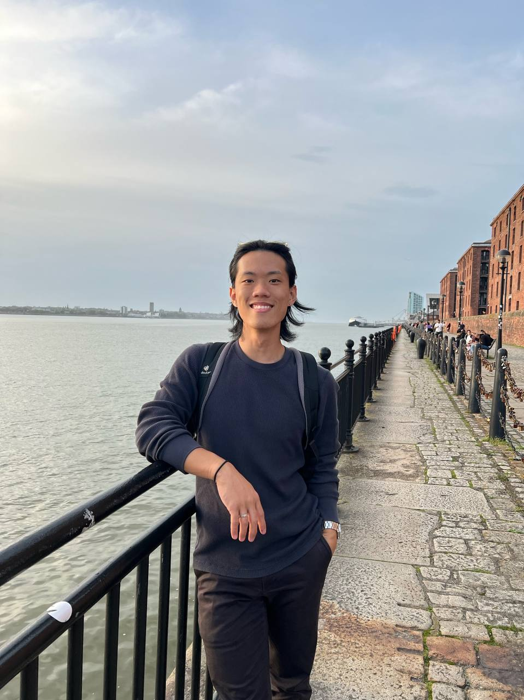

Optimal foil geometry for flow energy harvesting
FYP
Designed and executed experiments on tandem flapping foils in a water tunnel; processed datasets for performance comparison across geometries.
Portfolio • Aerospace Engineering
Fresh graduate (NTU) focused on operational engineering that works closely with the shopfloor — with a disciplined, technical, and design-oriented approach.
Prefer a clean read? -- Download my resume with the button above!

A short section to introduce myself and what I’m looking for.
I’m an aerospace engineer trained in both technical analysis and practical execution. I’m most effective in roles where engineering decisions meet real constraints — manufacturing reality, test data, process variation, schedule, and cost.
I’m disciplined in documentation and iteration: define the problem clearly, validate with data, then drive a clean, repeatable solution.
Visual representation of my technical and professional competencies.
This radar shows coverage across categories.
Selected engineering and product-style work. Click any card for a clean case study.
FYP
Designed and executed experiments on tandem flapping foils in a water tunnel; processed datasets for performance comparison across geometries.
Aircraft Design
Collaborated in a team of 6 to innovate, design, and market an aircraft; research on sizing, fuel, costs, and modelling in SolidWorks.
EID
Led a group of 9 to design and market a translating device integrated into a watch; delivered a business plan and proposal.
Student Project
Built a Python program to draw and hatch 2D diagrams automatically for engineering-style outputs.
Toggle between Education and Work Experience, click to expand.
Some additional certifications for completeness and credibility outside engineering.
A few words from previous employers, professors, and mentors.
“Thaddeus is a highly capable, motivated, and intellectually driven individual. His academic foundation, research skills, independence and genuine enthusiasm for learning make him an excellent candidate for your organisation.”
“Thaddeus has demonstrated his attentiveness to details, showing his competency in his areas of work with commitment and diligence by fulfilling his task with minimal supervision”
“Mr Chua was always eager to learn and had demonstrated a good and positive attitude and positive attitude that led him to produce excellent results in his attachment records.”
“2SG Chua understood the essence of teamwork and displayed a broad mind, lending a hand to his fellow Specialists from the other entities when required, gaining him the respect of both his peers and his men.”
Keep this minimal to avoid “blog vibe” — link out to a separate page when ready.
If you want to publish later, use a separate blog page:
View blog index →Reach me here — I’m open to opportunities and conversations.
Or use the quick links on the right →
If you’re a recruiter/hiring manager, include the role, location, and timeline — I’ll reply with availability.